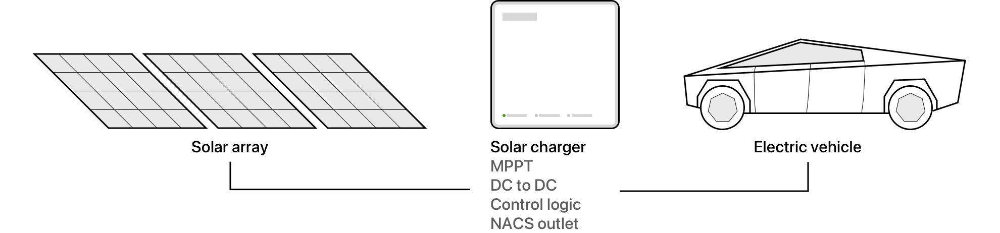
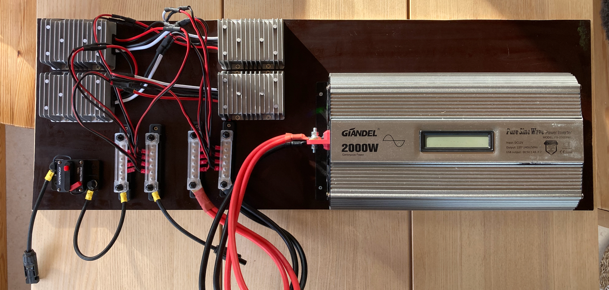
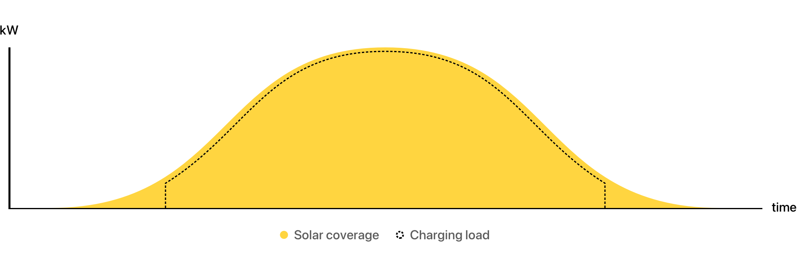
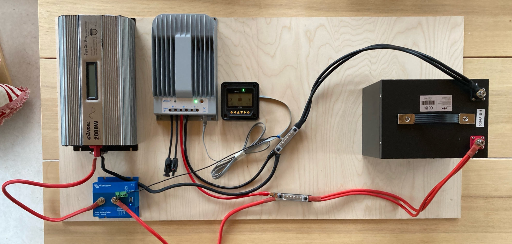
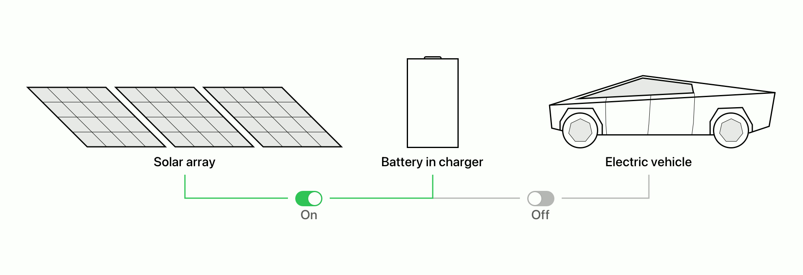

Solar charger
Role: System design/Electronics
Team: Lars Svennbeck

I'm looking to use product design and business to reduce fossil fuel emissions and increase energy supply resilience.
My goal is to make more people choose electric cars and my hypothesis is that offering off-grid solar EV chargers can help make it more attractive by reducing charging cost and increasing resilience.
I've built two EV solar charger prototypes to better understand the opportunities and limitations of solar charging. The main difference between the them is that one uses a battery and the other doesn't.
The reason for avoiding a battery is that they are expensive and eventually wear down. The first prototype charges the car directly from solar panels.

The charging speed adjusts according to available solar coverage.

When building the prototype I learned that there's a minimum wattage car-side to start charging, all electricity available below that is wasted. This means the prototype would require a significant amount of panels to stay above the minimum.
The second prototype uses a battery on a charge/discharge loop. This allows for any amount of solar panels to charge the car.


The solar panels always charges the battery, the battery charges the car until it’s empty, then it pauses until it’s full again.
Project conclusions:
Due to higher overall system cost and larger space requirements I believe a battery-free charger would make the most sense for commercial parking lots, businesses offering charging for employees and perhaps farmers, and not as much for individuals.
I believe a battery powered charger with a high cycle life battery chemistry like LFP could be a useful and desirable product for individuals.
Next steps:
I've found out that Enteligent is developing a battery-free charger so I don't see a market opportunity there.
There are many solar battery generators on the market. They only differ from my charger with a battery when it comes to the looping EV charging behavior. This could be fixed with a small software update, so I don't see a market opportunity there. I've contacted the manufacturers about implementing an EV charge mode but no one has done it yet.